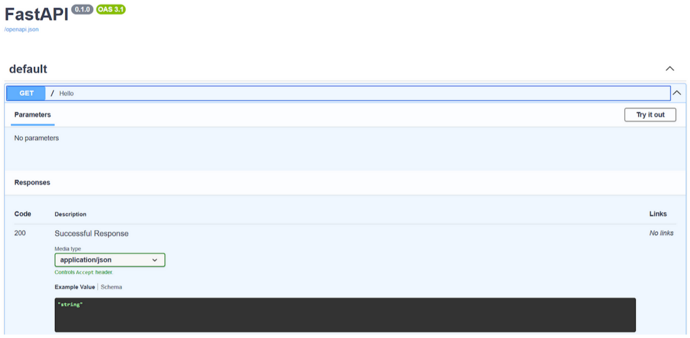
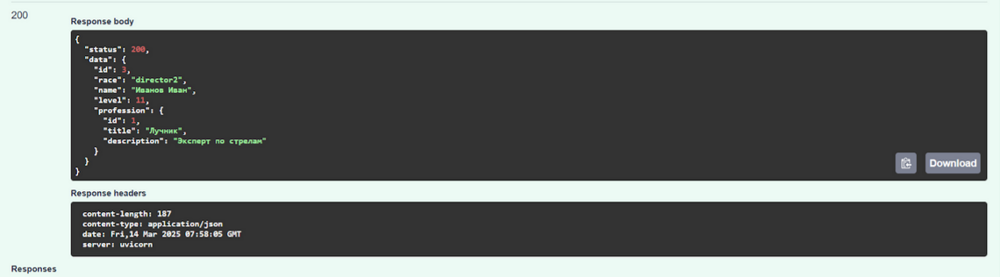
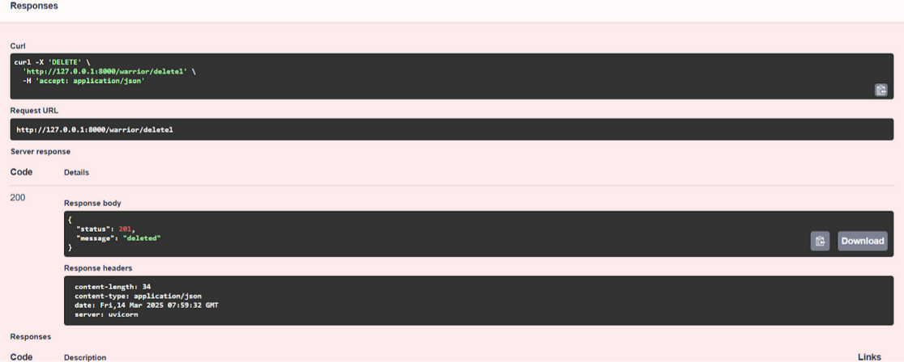
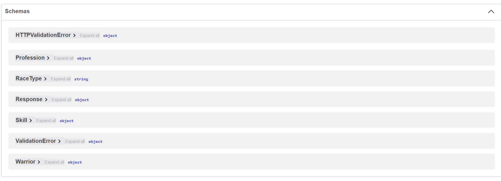
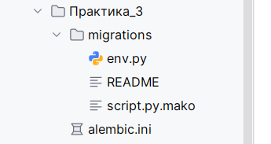

Лабораторная работа 1. Реализация серверного приложения FastAPI.
Необходимо реализовать полноценное серверное приложение с помощью фреймворка FastAPI с применением дополнительных средств и библиотек.
Практика
Установка FastApi
pip install fastapi[all]
127.0.0.1:8000
 127.0.0.1:8000/docs
127.0.0.1:8000/docs

 Запрос всех воинов:
Запрос всех воинов:
 Добавление воина:
Добавление воина:

Удаление воина:
Редактирование воина: После обновления кода для представлений изменилась документация к разработанному API (127.0.0.1:8000/docs). Теперь для каждого запроса отображается описание в каком формате передаются и принимаются данные для каждого реализованного метода.
После обновления кода для представлений изменилась документация к разработанному API (127.0.0.1:8000/docs). Теперь для каждого запроса отображается описание в каком формате передаются и принимаются данные для каждого реализованного метода.



pip install sqlmodel
Чтобы описанные таблицы были созданы необходимо добавить в main.py специальный метод on_startup с декоратором on_event вызывающий внутри их инициализацию.
@app.on_event("startup")
def on_startup():
init_db()
После запуска приложения в консоли вывелся SQL-запрос на создание сущностей, описанных в models.py
CREATE TABLE skill (
id SERIAL NOT NULL,
name VARCHAR NOT NULL,
description VARCHAR,
PRIMARY KEY (id)
)
Миграции, ENV, GitIgnore и структура проекта
Для интеграции Alembic в разрабатываемый проект необходимо его установить через пакетный менеджер:
pip install alembic
Реализация механизма миграций происходит через вызов alembic init [name] в командной строке, где [name] — название папки, хранящей настройки миграций. Сгенерируем папку с миграциями и сопутствующие файлы настроек:
alembic init migrations
В корне проекта, помимо ранее созданных файлов должна сформироваться следующая структура

Сгенерировалась папка migratgions хранящая внутри себя папку с файлами миграций versions, файл окружения БД env.py и шаблон генерации миграций script.py.mako. В корне проекта добавился файл настроек alembic.ini
Лабораторная работа 1
 Цели
Цели
Научится реализовывать полноценное серверное приложение с помощью фреймворка FastAPI с применением дополнительных средств и библиотек.
код из файла models.py:
from typing import Optional, List
from datetime import datetime
from sqlmodel import SQLModel, Field, Relationship
# ---------- USER ----------
class User(SQLModel, table=True):
user_id: Optional[int] = Field(default=None, primary_key=True)
username: str = Field(index=True, unique=True)
email: str = Field(unique=True, index=True)
password_hash: str
profile_info: Optional[str] = None
skills: Optional[str] = None
preferences: Optional[str] = None
created_at: datetime = Field(default_factory=datetime.utcnow)
books: List["UserBook"] = Relationship(back_populates="user")
sent_requests: List["ExchangeRequest"] = Relationship(back_populates="sender", sa_relationship_kwargs={"foreign_keys": "[ExchangeRequest.sender_id]"})
received_requests: List["ExchangeRequest"] = Relationship(back_populates="receiver", sa_relationship_kwargs={"foreign_keys": "[ExchangeRequest.receiver_id]"})
# ---------- BOOK ----------
class Book(SQLModel, table=True):
book_id: Optional[int] = Field(default=None, primary_key=True)
title: str
author: str
isbn: Optional[str] = None
genre: str
publication_year: int
condition: str
description: Optional[str] = None
owners: List["UserBook"] = Relationship(back_populates="book")
# ---------- USERBOOK ----------
class UserBook(SQLModel, table=True):
user_book_id: Optional[int] = Field(default=None, primary_key=True)
user_id: int = Field(foreign_key="user.user_id")
book_id: int = Field(foreign_key="book.book_id")
added_at: datetime = Field(default_factory=datetime.utcnow)
status: str # доступна / недоступна
location: Optional[str] = None
user: "User" = Relationship(back_populates="books")
book: "Book" = Relationship(back_populates="owners")
sender_requests: List["ExchangeRequest"] = Relationship(back_populates="sender_book", sa_relationship_kwargs={"foreign_keys": "[ExchangeRequest.sender_book_id]"})
receiver_requests: List["ExchangeRequest"] = Relationship(back_populates="desired_book", sa_relationship_kwargs={"foreign_keys": "[ExchangeRequest.desired_book_id]"})
# ---------- EXCHANGEREQUEST ----------
class ExchangeRequest(SQLModel, table=True):
request_id: Optional[int] = Field(default=None, primary_key=True)
sender_id: int = Field(foreign_key="user.user_id")
receiver_id: int = Field(foreign_key="user.user_id")
sender_book_id: int = Field(foreign_key="userbook.user_book_id")
desired_book_id: int = Field(foreign_key="userbook.user_book_id")
status: str # pending / accepted / rejected
created_at: datetime = Field(default_factory=datetime.utcnow)
updated_at: datetime = Field(default_factory=datetime.utcnow)
message: Optional[str] = None
sender: "User" = Relationship(back_populates="sent_requests", sa_relationship_kwargs={"foreign_keys": "[ExchangeRequest.sender_id]"})
receiver: "User" = Relationship(back_populates="received_requests", sa_relationship_kwargs={"foreign_keys": "[ExchangeRequest.receiver_id]"})
sender_book: "UserBook" = Relationship(back_populates="sender_requests", sa_relationship_kwargs={"foreign_keys": "[ExchangeRequest.sender_book_id]"})
desired_book: "UserBook" = Relationship(back_populates="receiver_requests", sa_relationship_kwargs={"foreign_keys": "[ExchangeRequest.desired_book_id]"})
exchange: Optional["Exchange"] = Relationship(back_populates="request")
# ---------- EXCHANGE ----------
class Exchange(SQLModel, table=True):
exchange_id: Optional[int] = Field(default=None, primary_key=True)
request_id: int = Field(foreign_key="exchangerequest.request_id", unique=True)
exchange_date: datetime = Field(default_factory=datetime.utcnow)
completion_status: str # в процессе / завершен
user1_rating: Optional[int] = None
user2_rating: Optional[int] = None
feedback: Optional[str] = None
request: "ExchangeRequest" = Relationship(back_populates="exchange")